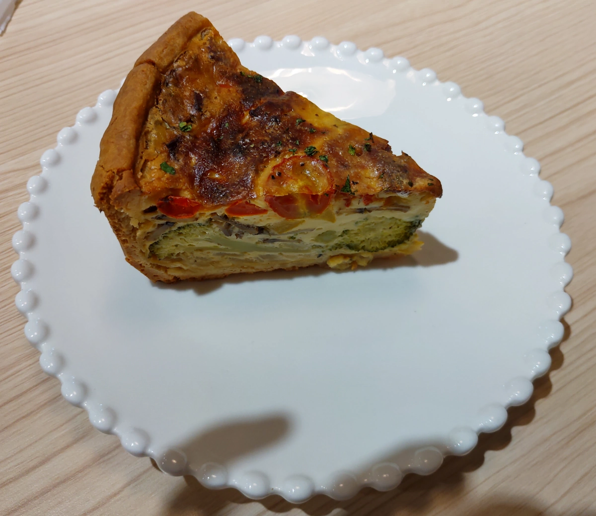

[台中] 翻轉甜點台中店
| 餐廳名稱: | 翻轉甜點 官網 |
|---|---|
| 翻轉甜點台中店 | |
| 地 址: | 台中市南屯區惠中路三段74號 |
| 營業時間: | 週四 ~ 週日 10:00 - 21:00 |
| 週三 12:00 - 21:00 | |
| 電話 : | 04 2382 2668 |
假日下午，中午在無米藏吃得非常飽，老了，無力再戰， 所以找一間 甜點咖啡店 休息一下。 相中這家 翻轉甜點台中店 ，衝過來了。 門口看起來就很可愛。
屋內裝潢是同色系，一樣可愛。
甜點櫃。上面是維也納麵包。
翻轉甜點 菜單 看他的FB菜單頁好了，比較清楚。
芒果果昔，芒果季節快結束了，所以趕快點。這個果昔雖然酸酸甜酸，奶油太多又不清爽，下次換一下。
鹹派，其實吃不下，預備用玻璃容器帶回家吃的。這鹹派尚可，可能我優秀鹹派吃太多了，還行。 
這是大重點，本店鎮店之寶，夏日芒果舒芙蕾，又好看又好吃，許多網美來拍攝。這是現做的，熱騰騰的舒芙蕾香甜可口、鬆軟。 有一球冰淇淋，一堆芒果小塊。還有餅乾甜奶油。好甜啊。
快吃完時，主廚似乎每一桌都送一份 維也納麵包，也是塗上甜奶油，再切成三段。維也納麵包本身就鬆軟帶甜味了，加上甜奶油，甜上加甜，香氣也很濃郁，好吃。

翻轉甜點台中店的服務態度也很親切，本來她想幫我們打包了，看到我們自備容器，還跑過來謝謝。這是很優秀的甜點店，如果心情不好，記得來這種甜點店，放鬆一下。